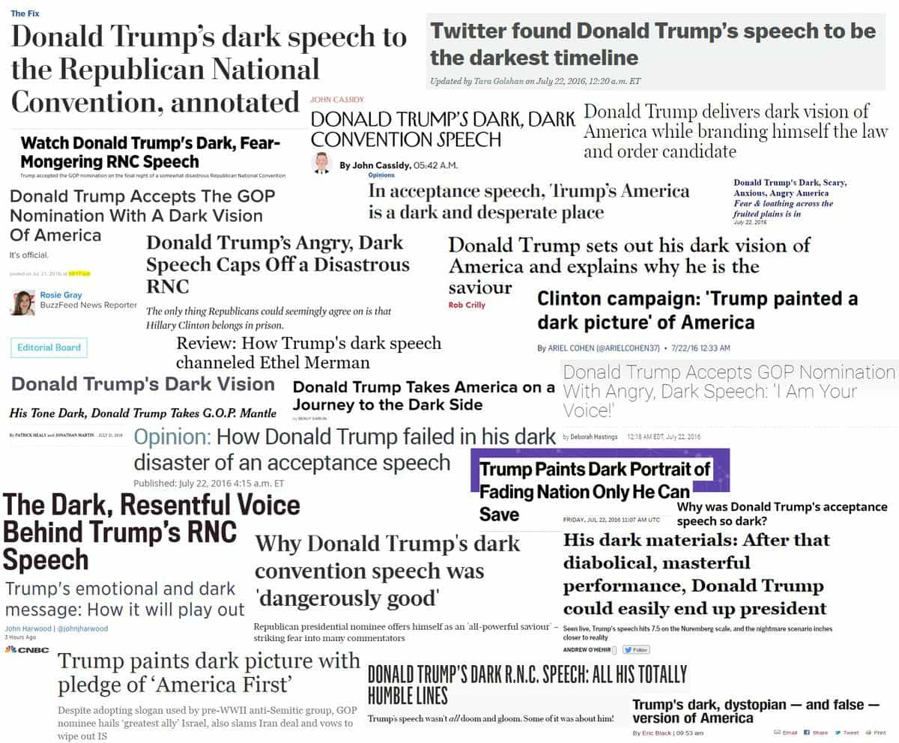

Daryush "Roosh" Valizadeh created ROK in October 2012. You can visit his blog at RooshV.com or follow him on Twitter and Facebook.


If you think of what happens to our community as a microcosm of larger forces, a lot of what we see occurring in Europe and the United States makes enough sense that you can start to predict the future. A reviewer of my new book notices this:
I thought [Free Speech Isn’t Free] would be somewhat boring and a mere recollection of what had happened in Canada, but there is far more of the story told and Roosh is surprisingly good at generating an almost suspenseful mood even though you probably know what happened. This is a behind the scenes, VIP access account.
It’s in Free Speech Isn’t Free that we see the inside details of what went down and how the media is far more sinister than I ever realized. We hear alot about how biased the media is – almost to the point of pseudo conspiracy theory – but when you see how the line between advocate/activist and journalist has been obliterated, you’ll be shocked as to just how much the media was out to get Roosh.
What Roosh does here is connect the dots. Why would any media publication sacrifice their reputation? Why would they lie about the February 6th meetups? Why the hell would they care about Roosh giving speeches to what was seemingly just a small group of men in each city? What Roosh has done is uncover that there is more sinister forces at work – to the point that you almost think you are reading a work of fiction. The war isn’t just cultural, its an ideological one and once you realize the etiology of the worldview of the people who went after Roosh, you realize that the cost of speaking out and being a figurehead isn’t cheap.
There is a war. It’s up to you to find your role – something Roosh goes over in this book as he explains the tactics and overall strategy that went into letting his speaking tour actually occur. Of key importance was finding people he could trust – a lesson as old as time itself.
These are only four rules you need to understand:
1. There is a group of very rich men who control the levers of power.
2. Those men own the media.
3. Those men sponsor political candidates on all sides to do their bidding.
4. Those men have a simple agenda of increasing their wealth and power, to be gods among men.
It’s really that simple. Anything else is a red herring, such as the differences between political parties, whether there is an “Illuminati” that does blood sacrifices, or if those at the top are Jews or lizard people.
From these rules, explaining what happened to me in Canada last year and the meetup outrage this past February is quite easy to explain:
1. I have an agenda that is traditional and patriarchal.
2. Those in power have an agenda that is non-traditional and matriarchal.
3. I began to physically organize into a proto-political movement.
Which institution can be instantly weaponized to attack a man who is physically organizing a movement that stands against the ruling agenda? The media. I don’t know exactly how they coordinate, but the exact same type of coordination you saw against Gamergate and now with Donald Trump confirms that the media works as a single organism that can spring to heel within hours.

Media coordination against Trump

Media coordination against gamers
I was recently told by an insider that the dividing line is physical organization. If you decide to have meetings that are politically subversive in nature, you will either be attacked like I have or be infiltrated by the FBI. We’re allowed to stew angrily in our internet ghettos, but the second we coordinate in person, the machine will attack again. I’m left with the decision on what to do from this point on.
To see the whole story of how the media attacked me, along with a breakdown of their master plan, check out my new book Free Speech Isn’t Free. It has a balanced mix of narrative and ideology that will also give you actionable advice to help defend yourself against establishment attacks. Click here to learn more about the book or order it now on Amazon.
Read More: Stop Being A Political Zombie